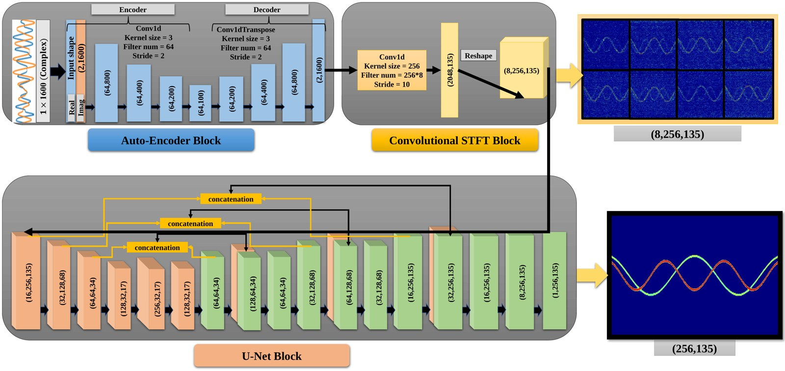
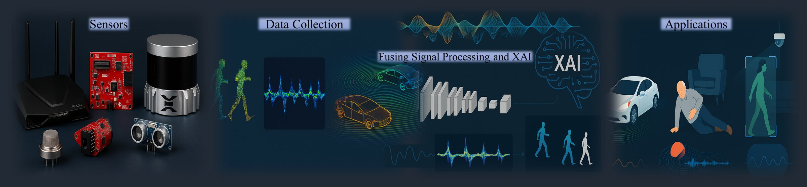
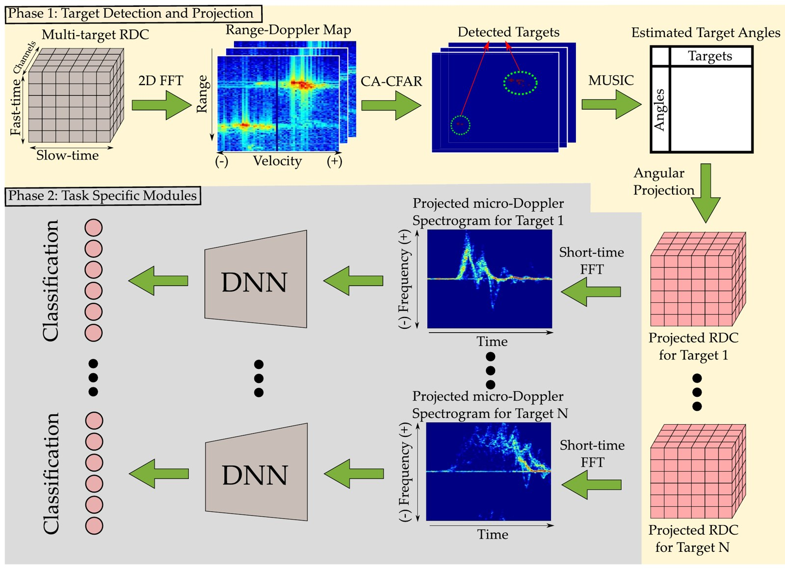

IEEE Transactions on Radar Systems, 2024
HRSpecNET: A Deep Learning-Based High-Resolution Radar Micro-Doppler Signature Reconstruction for Improved HAR Classification
S. Biswas, A. Manavi Alam, and A. C. Gurbuz
DOICode
Assistant Professor of Electrical and Computer Engineering
Grand Valley State University
Room 247, John C. Kennedy Hall of Engineering, 301 West Fulton Street, Grand Rapids, MI 49504
I am an Assistant Professor of Electrical and Computer Engineering at Grand Valley State University. I work on radar and RF signal processing and interpretable machine learning. My networks start from raw I/Q data and learn physically meaningful filters, so they are fast enough for real-time sensing and their decisions can be checked by an RF engineer.
I earned my Ph.D. in Electrical and Computer Engineering at Mississippi State University in 2025, advised by Dr. Ali C. Gurbuz and Dr. John E. Ball, and stayed on as a postdoctoral research associate building multimodal threat-detection systems with radar, acoustic, LiDAR and camera sensors. Before that I developed head-tracking algorithms for immersive audio as a research co-op at Bose, worked on radio network coverage as an engineer at Banglalink, and taught at Daffodil International University after my B.Sc. at BUET.
My work appears in IEEE Transactions on Radar Systems, IET Radar, Sonar & Navigation, IEEE JSTARS, Manufacturing Letters, the IEEE Radar Conference and the ICCV workshops, and has been supported through projects funded by NSF, AFRL, the U.S. Army ERDC and USDA.
Mississippi State University
Dissertation: Complex-Valued Parameterized Learnable Filters for Time-Frequency Domain Based Classification. Major Professor: Dr. John E. Ball. Dissertation Director: Dr. Ali C. Gurbuz.
Bangladesh University of Engineering and Technology (BUET)
Thesis: Optimization of Electric Vehicle Charging to Shave Peak Load for Integration in Smart Grid. Supervisor: Dr. Md. Forkan Uddin.
Department of Electrical and Computer Engineering, Grand Valley State University
Department of Electrical and Computer Engineering, Mississippi State University
Signal processing, machine learning and sensor fusion for multimodal threat detection with radar, acoustic, LiDAR and camera systems. Supervised graduate and undergraduate researchers and led experimental data collection.
IMPRESS Lab, Mississippi State University
Configured TI and INRAS radars for raw I/Q acquisition; built complex-valued learnable-filter networks, multimodal radar–LiDAR–video fusion, multi-target classification and high-resolution spectrogram reconstruction; collected RF waveforms with SDR transmit–receive pairs.
Bose Corporation, Framingham, MA
Developed a machine learning algorithm for Bose Immersive Audio that aligns the IMU sensor frame with the head frame, and head-tracking algorithms for more reliable audio spatialization.
High Performance Computing Center, Mississippi State University
Designed and implemented an SDR-based L-band (1400–1427 MHz) radiometer in MATLAB and C/C++.
Department of Electrical and Computer Engineering, Mississippi State University
Interim instructor for Signals and Systems; lab instructor for Advanced Electronic Circuits.
Banglalink Digital Communications Ltd., Dhaka, Bangladesh
Maintained network coverage and quality for the southwest zone of Bangladesh and contributed to network-wide 4G coverage upgrades.
Department of Electrical Engineering, Daffodil International University, Bangladesh

IEEE Transactions on Radar Systems, 2024
S. Biswas, A. Manavi Alam, and A. C. Gurbuz
DOICode
IEEE Transactions on Radar Systems, 2024
S. Biswas, C. O. Ayna, and A. C. Gurbuz
DOICode
IET Radar, Sonar & Navigation, 2023
E. Kurtoğlu, S. Biswas, A. C. Gurbuz, and S. Z. Gurbuz
DOIServing as Guest Editor of the Electronics (MDPI) Special Issue “Advanced Radar Sensing and Signal Processing for Intelligent Systems.” Submissions are open until 31 March 2027.
“Deep learning-based high-resolution spectrogram reconstruction for robust bearing fault diagnosis” published in Manufacturing Letters, with Saifur Rahman Tushar, Md Ebtidaul Karim, Dr. Abdullah Al Mamun and Dr. Mahathir Mohammad Bappy.
Joined the Department of Electrical and Computer Engineering at Grand Valley State University as an Assistant Professor.
Session Manager at IEEE VTC2026-Fall in Boston, for the track on vehicular cooperation, communication, radar and control.